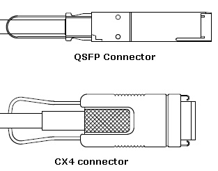
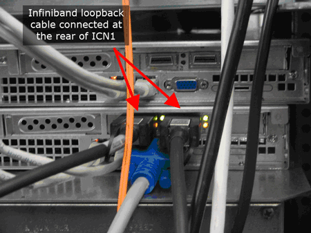

- 00000018WIA308F9F20GYZ
- id_131059633.0
- Aug 29, 2019 1:33:11 AM
ICN Infiniband Loopback Test
Diagnostic Path
Purpose
This diagnostic verifies the Infiniband hardware within a single ICN (as part of a multi-ICN system) to rule out hardware issues specific to an ICN by using the Infiniband "traceroute" utility to trace the path between port 1 and port 2 to establish connectivity. Because the hardware cannot be configured electronically for loopback operation, it is necessary to connect an Infiniband loopback cable between the ports for the test. This diagnostic provides a PASS/FAIL indication for the Infiniband hardware within Master ICN. This test can be used with other Infiniband tests (MGD Chassis Diagnostics, Infiniband Communication Diagnostic) to isolate an Infiniband problem.
| Capability | What it does | When to use |
| ICN Infiniband Loopback Test | Tests Infiniband hardware within ICN. | After Infiniband communication diagnostics have been completed, to isolate an Infiniband problem. |
Components Tested
VRE (Infiniband hardware)
Configuration
When running this diagnostic, you must change the Infiniband data cable connections on the ICN from the standard product configuration. After running this diagnostic, return the cables to their original connections.
Tools and Test Equipment
Only one of the loopback cables will be required to perform testing. Compare the connectors on the ICN to determine which cable is required..

| Item | Quantity | Part Number |
| Infiniband Loopback Cable (CX4 to CX4) | 1 | 5146975-8 |
| Infiniband Loopback Cable (QSFP to QSFP) | 1 | 5449790 |
For ICNs using CX4 connectors, if a loopback cable is not available the existing Infiniband cable may be used to perform the loopback test. However, as this cable is significantly longer than the loopback cable and will not isolate problems with the cable, use of a loopback cable is recommended.
This option is not applicable for ICNs using QSFP connectors.
Safety
| Warning | |
|---|---|
Procedure
-
Connect each end of the Infiniband loopback cable with the appropriate connector to the Infiniband ports on the rear of the ICN. Example ICN configurations are shown below.
Figure 2. ICN Infiniband Loopback Cable (CX4 to CX4) for 5127452 ICN (Dedicated Computing) 
Figure 3. ICN Infiniband Loopback Cable (CX4 to CX4) for 5127452-3 ICN (Sun 4100) 
Figure 4. ICN Infiniband Loopback Cable (QSFP to QSFP) for 4170M2 ICN -
The green LED next to each Infiniband port will turn on when the cable is connected.
-
Wait 15 seconds and confirm that the yellow LED next to each Infiniband port turns on.
-
Enter the desired iteration number in the field provided.
Click Run and wait for the test to complete.
Note:After you click Run, do not click anywhere else in the Common Service Desktop until the test is complete. If you need to abort the test, click Stop.
-
Confirm that the test was successful.
Problem/Solution Table
Review the error log and corresponding extended error messages to determine if actions are needed. Additional responses to the diagnostic results are as follows:
| Fault | Problem Description | GE Field Action |
| Green LEDs do not display when the Infiniband loopback cable is connected. |
|
|
| Yellow LEDs do not display within 15 seconds of connecting the Infiniband loopback cable. |
|
|
|
Master ICN Infiniband hardware problem.
|
Finalization
-
Remove the Infiniband loopback cable from the Infiniband ports on the rear of the Master ICN.
-
Reconnect the original Infiniband data cable to port 1.
-
Perform a TPS reset.